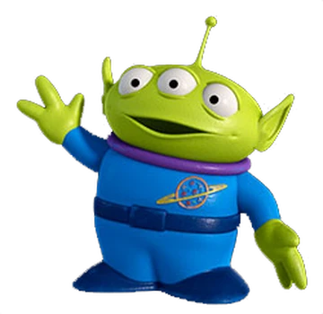

Alien
In the Toy Story films, the Little Green Men are promotional toys for Pizza Planet, as they wear uniforms with the restaurant's logo. They are known for their near-worship of "The Claw", the claw of the game they are a part of. They also usually speak simultaneously.